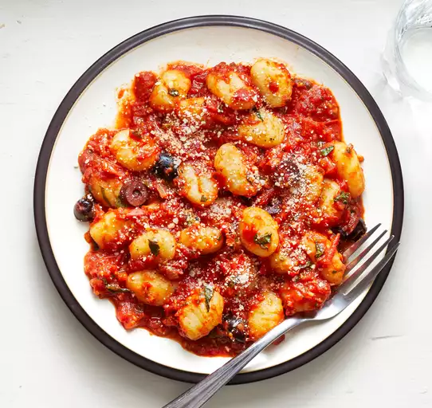

Gnocchi with Cherry Tomato Sauce

Description
In this gnocchi with cherry tomato sauce recipe, the flavor of potato gnocchi is lifted by this sweet, fresh, spicy sauce.
Ingredients
- 1 tablespoon oline oil
- 1 large red onion, finely chopped
- 1 clove garlic, minced
- 1/2 red chile pepper, minced
- 2 pints cherry tomatoes, quartered
- 1 1/2 cups canned crushed tomatoes
- 1 (16 ounce) package fresh gnocchi
- 1 cup chopped fresh basil
- 2/3 cup Kalamata olives, sliced
- 1/4 cup grated Parmesan cheese
Steps
- Heat olive oil in a large saucepan over medium heat. Add onion, garlic, and chile pepper; cook until onion has softened and turned translucent, about 5 minutes. Increase heat to medium-high; stir in cherry tomatoes. Cook until tomatoes start to break down and begin to make a sauce, about 5 minutes. Stir in crushed tomatoes; bring to a simmer, then reduce heat to medium-low and cook for 10 minutes.
- Meanwhile, bring a large pot of lightly salted water to a boil over high heat. Cook gnocchi in the boiling water until they float to the top, 2 to 3 minutes. Gently transfer gnocchi to a serving dish using a strainer or slotted spoon.
- Stir basil and olives into simmering sauce; cook 1 minute. Pour sauce over gnocchi. Sprinkle servings with Parmesan cheese.
Home